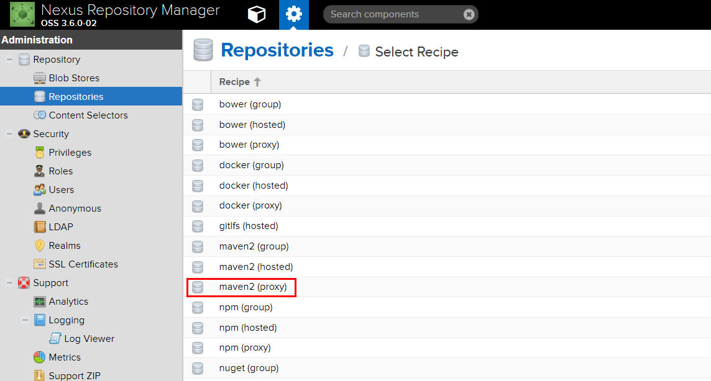

Nexus 3.x私服使用
| 版本 | 日期 | 状态 | 修订人 | 摘要 |
|---|---|---|---|---|
| V1.0 | 2018-05-14 | 创建 | 开源方案 | 初始版本 |
私服架构

私服是指私有服务器，是架设在局域网的一种特殊的远程仓库，目的是代理远程仓库及部署第三方构建。 有了私服之后，当 Maven 需要下载构件时，直接请求私服，私服上存在则下载到本地仓库； 否则，私服请求外部的远程仓库，将构件下载到私服，再提供给本地仓库下载。
Nexus是一个强大的Maven仓库管理器，它极大地简化了本地内部仓库的维护和外部仓库的访问。 如果使用了公共的Maven仓库服务器，可以从Maven中央仓库下载所需要的构件（Artifact），但这通常不是一个好的做法。 正常做法是在本地架设一个本地Maven仓库服务器，利用Nexus私服可以只在一个地方就能够完全控制访问和部署在你所维护仓库中的每个Artifact。
Nexus优点
为什么要构建Nexus私服？好处随便列几点：
- Nexus在代理远程仓库的同时维护本地仓库，以降低中央仓库的负荷,节省外网带宽和时间，Nexus私服就可以满足这样的需要。
- Nexus是一套“开箱即用”的系统不需要数据库，它使用文件系统加Lucene来组织数据。
- Nexus使用ExtJS来开发界面，利用Restlet来提供完整的REST APIs，并能通过插件和各种IDE集成。
- Nexus支持WebDAV与LDAP安全身份认证。
- Nexus还提供了强大的仓库管理功能，构件搜索功能，它基于REST，提供友好的UI，占用较少的内存，基于简单文件系统而非数据库。
Nexus安装
我们这里直接使用 Nexus 模板进行安装 模板地址参考 https://github.com/hunterfu/openshift-template/tree/master/devops/nexus3
Nexus使用设置
访问对应的router域名, Nexus默认的用户名密码是 admin/admin123
首页效果如下：
使用默认的管理员,进入管理界面：
仓库
最核心的是仓库管理
默认的个仓库说明：
- maven-central：maven中央库，默认从https://repo1.maven.org/maven2/拉取jar
- maven-releases：私库发行版jar，初次安装请将
Deployment policy设置为Allow redeploy - maven-snapshots：私库快照（调试版本）jar
- maven-public：仓库分组，把上面三个仓库组合在一起对外提供服务，在本地maven基础配置
settings.xml中使用。
Nexus默认的仓库类型有以下四种：
- group(仓库组类型)：又叫组仓库，用于方便开发人员自己设定的仓库；
- hosted(宿主类型)：内部项目的发布仓库（内部开发人员，发布上去存放的仓库）；
- proxy(代理类型)：从远程中央仓库中寻找数据的仓库（可以点击对应的仓库的Configuration页签下Remote Storage属性的值即被代理的远程仓库的路径）；
- virtual(虚拟类型)：虚拟仓库（这个基本用不到，重点关注上面三个仓库的使用）；
Policy(策略): 表示该仓库为发布(Release)版本仓库还是快照(Snapshot)版本仓库；
由于访问中央仓库有时候会比较慢，这里我们添加一个阿里云的代理仓库，然后优先级放到默认中央库之前
阿里云的maven仓库url为http://maven.aliyun.com/nexus/content/groups/public

然后再public组里面将这个aliyun-proxy仓库加入，排在maven-central之前即可。
Nexus仓库分类的概念
Maven可直接从宿主仓库下载构件,也可以从代理仓库下载构件,而代理仓库间接的从远程仓库下载并缓存构件
为了方便,Maven可以从仓库组下载构件,而仓库组并没有时间的内容(下图中用虚线表示,它会转向包含的宿主仓库或者代理仓库获得实际构件的内容)

Nexus的调度任务
默认安装好之后是没有索引和jar文件的，因为你要自己定义任务去执行。
Nexus提供了一系列可配置的调度任务来方便用户管理系统。用户可以设定这些任务运行的方式，例如每天、每周等。调度任务会在适当的时候在后台运行。
要建立一个调度任务，单击左边导航菜单中的Tasks，点击Create Task，然后选择一个任务类型。
以下几种常用类型的调度任务：
- Execute script：执行自定义脚本
- Purge开头：清理一些不使用的资源。
- Rebuild repository index：为仓库重新编纂索引，从远仓库下载最新的索引。
- Rebuild Maven repository metadata：基于仓库内容重新创建仓库元数据文件，同时重新创建每个文件的校验和md5与sha1。
- Remove snapshots from Maven repository：把快照删了，这个是在稳定版发布后清除
比如我新建一个重构索引的任务，然后选择aliyun仓库，让它把远程索引取下来，手动执行。不过最好别这样做，因为需要很大的硬盘空间。
最好是让它自己去维护，请求一个依赖的时候如果私服没有会自动去远仓库取的。
Nexus搜索页
这个不需要登录就可以访问，用来查询jar包。支持模糊查询

Blob Stores
文件存储的地方，创建一个目录的话，对应文件系统的一个目录，可供仓库上传文件使用，如图所示：
本地Maven使用私服
安装和配置好之后，在开发中如何使用呢。可在maven的默认配置settings.xml中修改如下：
<servers>
<server>
<id>releases</id>
<username>admin</username>
<password>admin123</password>
</server>
<server>
<id>snapshots</id>
<username>admin</username>
<password>admin123</password>
</server>
</servers>
<mirrors>
<mirror>
<id>nexus</id>
<mirrorOf>*</mirrorOf>
<url>http://nexus.ops.com/repository/maven-public/</url>
</mirror>
</mirrors>
如果要发布自己的jar到私服，就需要修改工程的pom.xml，添加如下内容，否则什么都不用做：
<distributionManagement>
<repository>
<id>releases</id>
<name>Releases</name>
<url>http://nexus.ops.com/repository/maven-releases/</url>
</repository>
<snapshotRepository>
<id>snapshots</id>
<name>Snapshot</name>
<url>http://nexus.ops.com/repository/maven-snapshots/</url>
</snapshotRepository>
</distributionManagement>
注意上面的repository的id值一定要跟settings.xml文件中配置的server一致。
上传到Nexus上，使用 mvn deploy 即可，开发的时候请使用snapshot版本，也就是version的后缀必须是-SNAPSHOT。
第三方Jar上传到Nexus
mvn deploy:deploy-file \
-DgroupId=<group-id> \
-DartifactId=<artifact-id> \
-Dversion=<version> \
-Dpackaging=<type-of-packaging> \
-Dfile=<path-to-file> \
-DrepositoryId=<server-id-settings.xml> \
-Durl=<url-of-the-repository-to-deploy>
-DrepositoryId的值即为在setttings.xml里面配置的server id。